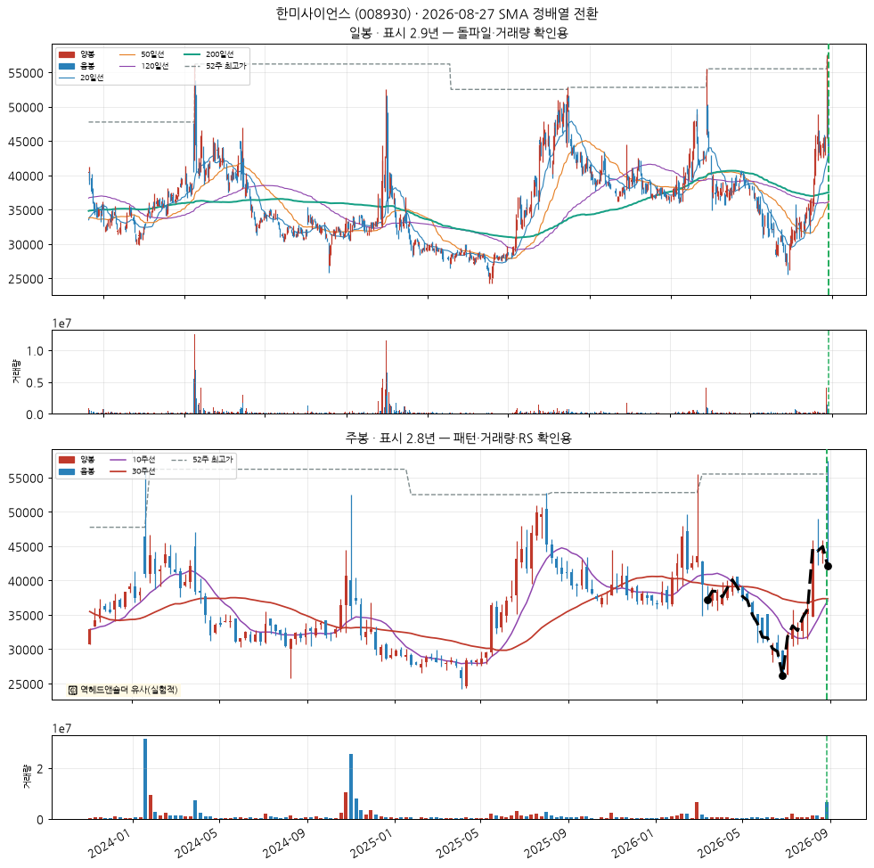
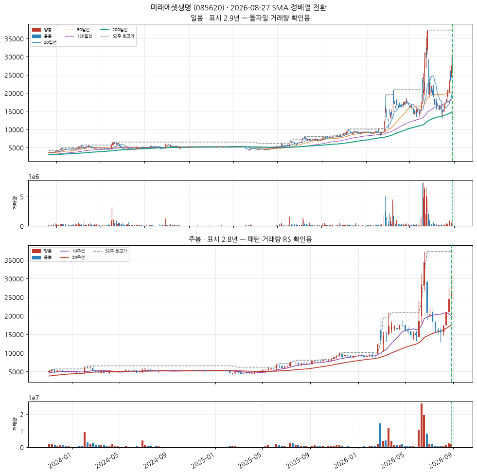
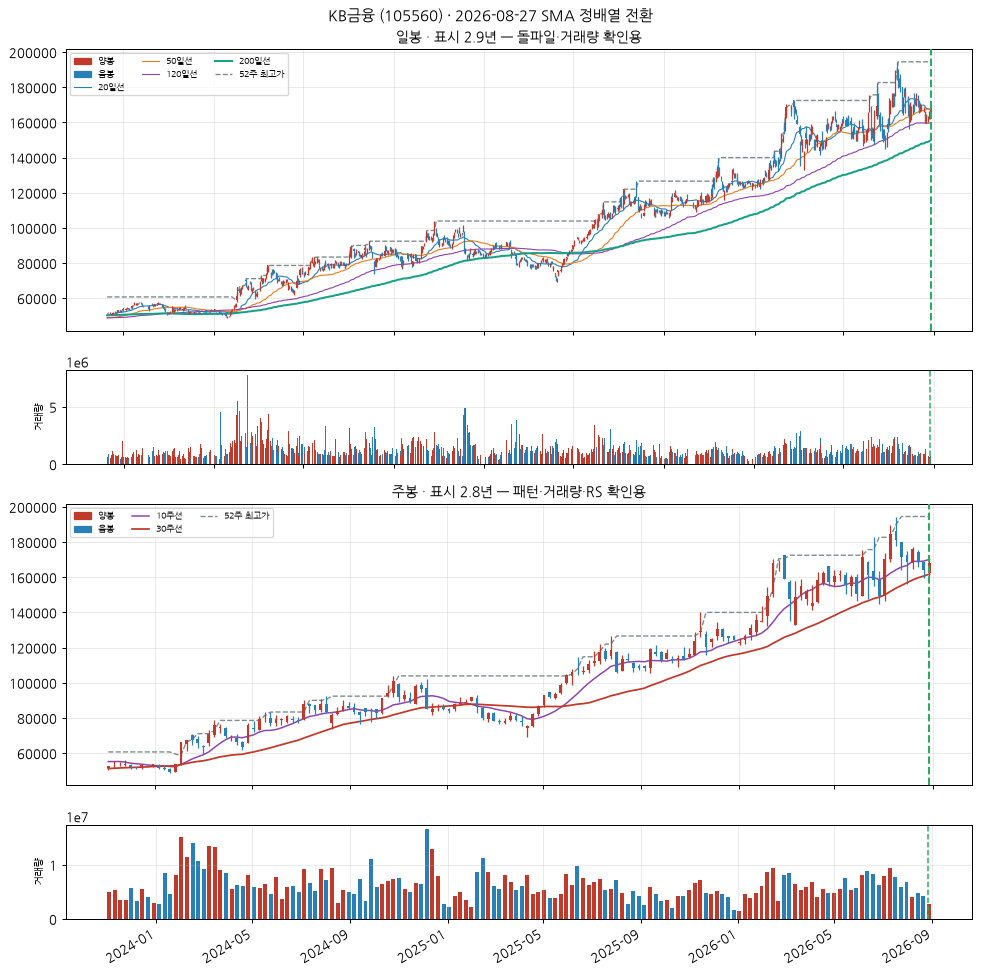
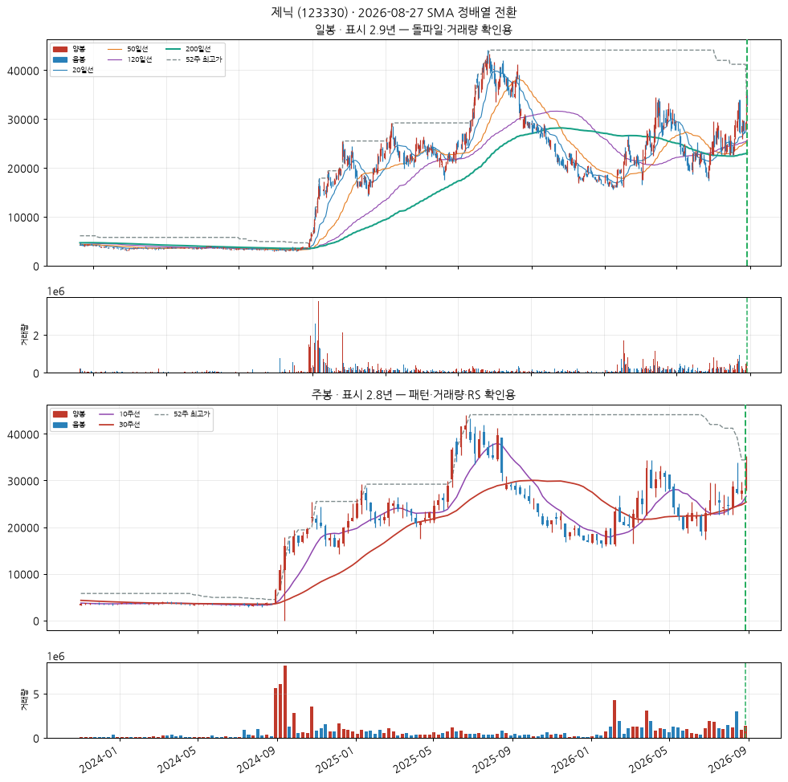
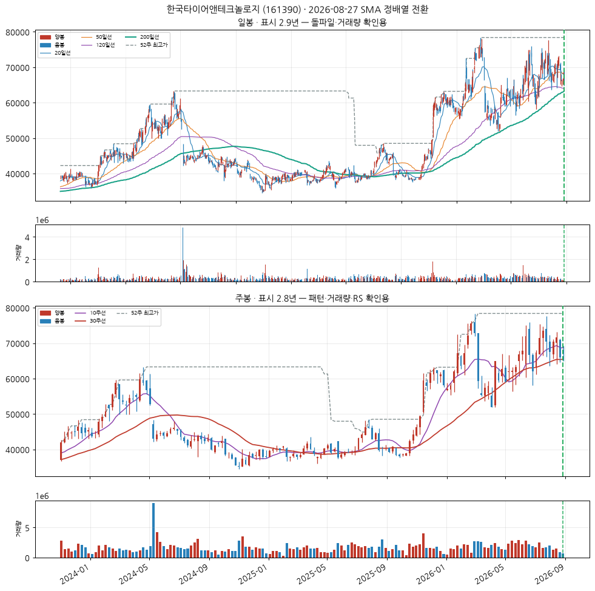
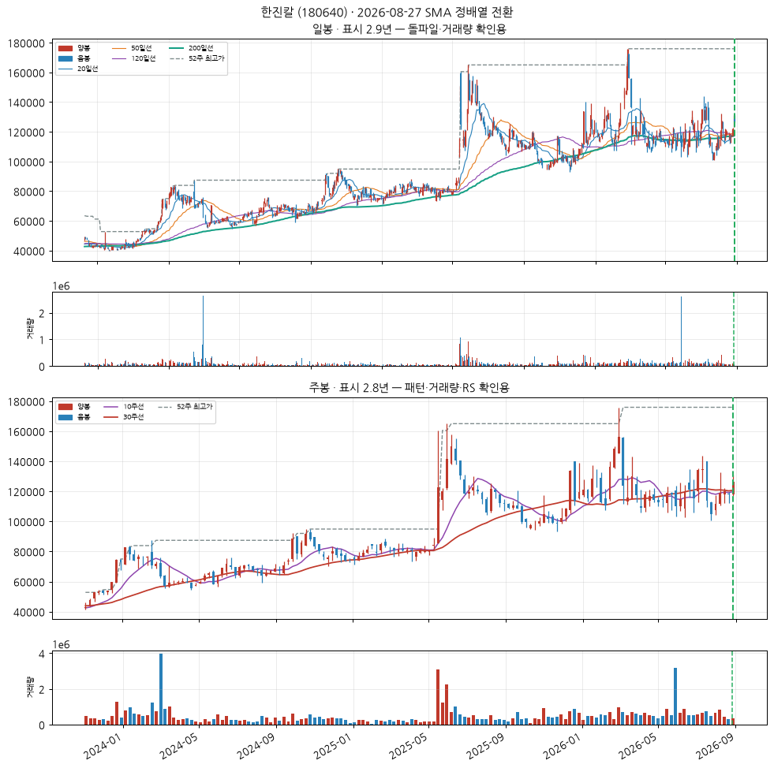

기타 금융업
업종 참고: RS 평균 42/99(업종 중 상위 48%) · 오늘 신호 5건 · 코스피 대비 -25.6%p(126일)
🧪 자체 섹터 분류(실험적, 참고용): 의약품 제조업 (키다리스튜디오·씨젠 등 25종목)
섹터 내 RS 순위: 3/25위 (RS 63/99)
섹터 1~3위: 키다리스튜디오(95), 씨젠(85), 한미사이언스(63)
※ 자체 상관관계 계산 — 검증 시 기준업종 11개 중 8개 정확, 시간에 따라 자주 바뀔 수 있음(3개월 안정성 실측 낮음)
종가 42,100 · 거래대금 186억
정배열 1일차거래량비 0.9x정배열 후 +0.0%
손절 38,732 | 목표 52,204 | 수량 237주

🧪 역헤드앤숄더 유사(실험적)
CC — 분기 실적 성장 우수
2026 반기보고서(누적) · 순이익 흑자전환(+nan억원→+437억원) · EPS 흑자전환(+nan원→+644원) · 매출 흑자전환(+nan억원→+3,679억원)
DART 공시 기준 · 분기 단독 전년동기 대비
AA — 연간 실적 성장 양호
2025 사업보고서(연간) · 순이익 +107.6% · EPS +99.1% · 매출 +5.7%
DART 공시 기준 · 연간 전년동기 대비
NN — 신고가·모멘텀 데이터 없음
신고가 데이터 없음
SS — 수급(거래량) 미흡
20일 평균 대비 0.86배
유통주식수·순매수 데이터는 미보유 (거래량으로만 근사)
LL — 주도주(상대강도) 보통
RS 등급 63/99 (유니버스 1951종목 중 백분위) · 지수대비 -14.7%p (126일)
상위 시가총액 유니버스 기준 — KRX 전체 대비 백분위 아님
II — 기관·외국인 수급 양호
20일 순매수 +6.07% (거래대금 대비) · 최근절반 -1.60% vs 이전절반 +32.52% (약화) · 순매수 16일 · 누적 +298.7억원
한국투자증권 공식 API(KIS) 기준 · 기관+외국인 합산, 기타법인 제외로 거래대금은 소폭 과소추정 · 임계값은 아직 실측 검증 전 잠정치 — 수급 이력이 쌓이면 다른 지표와 같은 방식으로 구분력을 측정해 조정 예정 · 최근 유입이 이전보다 약해져 한 단계 낮춤
MM — 시장방향 미흡
KOSPI 지수가 60일선 아래
실제 매매 필터로는 미적용(표시 전용) — 종목 선별보다 지수 자체 타이밍이 더 효율적이라는 자체 검증 결과 있음 (reports/vs_kospi.md)
보험업
업종 참고: RS 평균 66/99(업종 중 상위 6%) · 오늘 신호 1건 · 코스피 대비 +0.2%p(126일)
🧪 자체 섹터 분류(실험적, 참고용): 특수 목적용 기계 제조업 (미래에셋생명·뷰웍스 등 11종목)
섹터 내 RS 순위: 1/11위 (RS 97/99)
섹터 1~3위: 미래에셋생명(97), 뷰웍스(67), 스맥(19)
※ 자체 상관관계 계산 — 검증 시 기준업종 11개 중 8개 정확, 시간에 따라 자주 바뀔 수 있음(3개월 안정성 실측 낮음)
종가 25,950 · 거래대금 105억
정배열 1일차거래량비 1.2x정배열 후 +0.0%
손절 23,874 | 목표 32,178 | 수량 385주

CC — 분기 실적 성장 우수
2026 반기보고서(누적) · 순이익 흑자전환(+nan억원→+180억원) · EPS 흑자전환(+nan원→+138원)
DART 공시 기준 · 분기 단독 전년동기 대비
AA — 연간 실적 성장 미흡
2025 사업보고서(연간) · 순이익 -3.9% · EPS -3.9%
DART 공시 기준 · 연간 전년동기 대비
NN — 신고가·모멘텀 데이터 없음
신고가 데이터 없음
SS — 수급(거래량) 양호
20일 평균 대비 1.22배
유통주식수·순매수 데이터는 미보유 (거래량으로만 근사)
LL — 주도주(상대강도) 우수
RS 등급 97/99 (유니버스 1951종목 중 백분위) · 지수대비 +93.9%p (126일)
상위 시가총액 유니버스 기준 — KRX 전체 대비 백분위 아님
II — 기관·외국인 수급 우수
20일 순매수 +6.60% (거래대금 대비) · 최근절반 +7.16% vs 이전절반 +4.22% (개선) · 순매수 15일 · 누적 +103.5억원
한국투자증권 공식 API(KIS) 기준 · 기관+외국인 합산, 기타법인 제외로 거래대금은 소폭 과소추정 · 임계값은 아직 실측 검증 전 잠정치 — 수급 이력이 쌓이면 다른 지표와 같은 방식으로 구분력을 측정해 조정 예정
MM — 시장방향 미흡
KOSPI 지수가 60일선 아래
실제 매매 필터로는 미적용(표시 전용) — 종목 선별보다 지수 자체 타이밍이 더 효율적이라는 자체 검증 결과 있음 (reports/vs_kospi.md)
기타 금융업
업종 참고: RS 평균 42/99(업종 중 상위 48%) · 오늘 신호 5건 · 코스피 대비 -25.6%p(126일)
🧪 자체 섹터 분류(실험적, 참고용): 기타 금융업 (신한지주·하나금융지주 등 11종목)
섹터 내 RS 순위: 3/11위 (RS 70/99)
섹터 1~3위: 신한지주(73), 하나금융지주(72), KB금융(70)
※ 자체 상관관계 계산 — 검증 시 기준업종 11개 중 8개 정확, 시간에 따라 자주 바뀔 수 있음(3개월 안정성 실측 낮음)
종가 168,100 · 거래대금 1,270억
정배열 1일차거래량비 0.8x정배열 후 +0.0%
손절 154,652 | 목표 208,444 | 수량 59주

CC — 분기 실적 성장 우수
2026 반기보고서(누적) · 순이익 흑자전환(+nan억원→+20,105억원) · EPS 흑자전환(+nan원→+5,549원)
DART 공시 기준 · 분기 단독 전년동기 대비
AA — 연간 실적 성장 양호
2025 사업보고서(연간) · 순이익 +16.1% · EPS +19.6%
DART 공시 기준 · 연간 전년동기 대비
NN — 신고가·모멘텀 데이터 없음
신고가 데이터 없음
SS — 수급(거래량) 미흡
20일 평균 대비 0.76배
유통주식수·순매수 데이터는 미보유 (거래량으로만 근사)
LL — 주도주(상대강도) 양호
RS 등급 70/99 (유니버스 1951종목 중 백분위) · 지수대비 -9.3%p (126일)
상위 시가총액 유니버스 기준 — KRX 전체 대비 백분위 아님
II — 기관·외국인 수급 미흡
20일 순매수 -0.80% (거래대금 대비) · 최근절반 -1.47% vs 이전절반 -0.20% (약화) · 순매수 14일 · 누적 -256.5억원
한국투자증권 공식 API(KIS) 기준 · 기관+외국인 합산, 기타법인 제외로 거래대금은 소폭 과소추정 · 임계값은 아직 실측 검증 전 잠정치 — 수급 이력이 쌓이면 다른 지표와 같은 방식으로 구분력을 측정해 조정 예정
MM — 시장방향 미흡
KOSPI 지수가 60일선 아래
실제 매매 필터로는 미적용(표시 전용) — 종목 선별보다 지수 자체 타이밍이 더 효율적이라는 자체 검증 결과 있음 (reports/vs_kospi.md)
기타 화학제품 제조업
업종 참고: RS 평균 48/99(업종 중 상위 33%) · 오늘 신호 4건 · 코스피 대비 -19.0%p(126일)
🧪 자체 섹터 분류(실험적, 참고용): 기타 금융업 (제닉·동양생명 등 14종목)
섹터 내 RS 순위: 1/14위 (RS 95/99)
섹터 1~3위: 제닉(95), 동양생명(75), LF(65)
※ 자체 상관관계 계산 — 검증 시 기준업종 11개 중 8개 정확, 시간에 따라 자주 바뀔 수 있음(3개월 안정성 실측 낮음)
종가 33,800 · 거래대금 76억
정배열 1일차거래량비 0.6x정배열 후 +0.0%
손절 31,096 | 목표 41,912 | 수량 295주

CC — 분기 실적 성장 우수
2026 반기보고서(누적) · 순이익 흑자전환(+nan억원→+112억원) · EPS 흑자전환(+nan원→+1,433원) · 매출 흑자전환(+nan억원→+492억원)
DART 공시 기준 · 분기 단독 전년동기 대비
AA — 연간 실적 성장 우수
2025 사업보고서(연간) · 순이익 +149.7% · EPS +133.0% · 매출 +56.7%
DART 공시 기준 · 연간 전년동기 대비
NN — 신고가·모멘텀 데이터 없음
신고가 데이터 없음
SS — 수급(거래량) 미흡
20일 평균 대비 0.61배
유통주식수·순매수 데이터는 미보유 (거래량으로만 근사)
LL — 주도주(상대강도) 우수
RS 등급 95/99 (유니버스 1951종목 중 백분위) · 지수대비 +100.9%p (126일)
상위 시가총액 유니버스 기준 — KRX 전체 대비 백분위 아님
II — 기관·외국인 수급 양호
20일 순매수 +1.32% (거래대금 대비) · 최근절반 +1.91% vs 이전절반 +0.59% (개선) · 순매수 11일 · 누적 +27.9억원
한국투자증권 공식 API(KIS) 기준 · 기관+외국인 합산, 기타법인 제외로 거래대금은 소폭 과소추정 · 임계값은 아직 실측 검증 전 잠정치 — 수급 이력이 쌓이면 다른 지표와 같은 방식으로 구분력을 측정해 조정 예정
MM — 시장방향 양호
KOSDAQ 지수가 20일선 위
실제 매매 필터로는 미적용(표시 전용) — 종목 선별보다 지수 자체 타이밍이 더 효율적이라는 자체 검증 결과 있음 (reports/vs_kospi.md)
한국타이어앤테크놀로지 (161390)
신규
KOSPI
고무제품 제조업
업종 참고: RS 평균 46/99(업종 중 상위 37%) · 오늘 신호 2건 · 코스피 대비 -26.0%p(126일)
🧪 자체 섹터 분류(실험적, 참고용): 기타 금융업 (국보디자인·동아지질 등 10종목)
섹터 내 RS 순위: 3/10위 (RS 54/99)
섹터 1~3위: 국보디자인(67), 동아지질(58), 한국타이어앤테크놀로지(54)
※ 자체 상관관계 계산 — 검증 시 기준업종 11개 중 8개 정확, 시간에 따라 자주 바뀔 수 있음(3개월 안정성 실측 낮음)
종가 65,600 · 거래대금 206억
정배열 1일차거래량비 1.2x정배열 후 +0.0%
손절 60,352 | 목표 81,344 | 수량 152주

CC — 분기 실적 성장 우수
2026 반기보고서(누적) · 순이익 흑자전환(+nan억원→+3,172억원) · 매출 흑자전환(+nan억원→+56,825억원)
DART 공시 기준 · 분기 단독 전년동기 대비
AA — 연간 실적 성장 미흡
2025 사업보고서(연간) · 순이익 -14.1% · 매출 +125.3%
DART 공시 기준 · 연간 전년동기 대비
NN — 신고가·모멘텀 데이터 없음
신고가 데이터 없음
SS — 수급(거래량) 양호
20일 평균 대비 1.16배
유통주식수·순매수 데이터는 미보유 (거래량으로만 근사)
LL — 주도주(상대강도) 보통
RS 등급 54/99 (유니버스 1951종목 중 백분위) · 지수대비 -20.6%p (126일)
상위 시가총액 유니버스 기준 — KRX 전체 대비 백분위 아님
II — 기관·외국인 수급 미흡
20일 순매수 -3.71% (거래대금 대비) · 최근절반 -7.81% vs 이전절반 -0.67% (약화) · 순매수 8일 · 누적 -135.7억원
한국투자증권 공식 API(KIS) 기준 · 기관+외국인 합산, 기타법인 제외로 거래대금은 소폭 과소추정 · 임계값은 아직 실측 검증 전 잠정치 — 수급 이력이 쌓이면 다른 지표와 같은 방식으로 구분력을 측정해 조정 예정
MM — 시장방향 미흡
KOSPI 지수가 60일선 아래
실제 매매 필터로는 미적용(표시 전용) — 종목 선별보다 지수 자체 타이밍이 더 효율적이라는 자체 검증 결과 있음 (reports/vs_kospi.md)
기타 금융업
업종 참고: RS 평균 42/99(업종 중 상위 48%) · 오늘 신호 5건 · 코스피 대비 -25.6%p(126일)
🧪 자체 섹터 분류(실험적, 참고용): 기타 금융업 (국보디자인·동아지질 등 10종목)
섹터 내 RS 순위: 4/10위 (RS 44/99)
섹터 1~3위: 국보디자인(67), 동아지질(58), 한국타이어앤테크놀로지(54)
※ 자체 상관관계 계산 — 검증 시 기준업종 11개 중 8개 정확, 시간에 따라 자주 바뀔 수 있음(3개월 안정성 실측 낮음)
종가 126,600 · 거래대금 65억
정배열 1일차거래량비 0.4x정배열 후 +0.0%
손절 116,472 | 목표 156,984 | 수량 78주

CC — 분기 실적 성장 미흡
2026 반기보고서(누적) · 순이익 적자확대(+nan억원→-857억원) · 매출 흑자전환(+nan억원→+715억원)
DART 공시 기준 · 분기 단독 전년동기 대비
AA — 연간 실적 성장 미흡
2025 사업보고서(연간) · 순이익 -68.9% · 매출 +2.1%
DART 공시 기준 · 연간 전년동기 대비
NN — 신고가·모멘텀 데이터 없음
신고가 데이터 없음
SS — 수급(거래량) 미흡
20일 평균 대비 0.44배
유통주식수·순매수 데이터는 미보유 (거래량으로만 근사)
LL — 주도주(상대강도) 보통
RS 등급 44/99 (유니버스 1951종목 중 백분위) · 지수대비 -26.0%p (126일)
상위 시가총액 유니버스 기준 — KRX 전체 대비 백분위 아님
II — 기관·외국인 수급 양호
20일 순매수 +17.80% (거래대금 대비) · 최근절반 +0.71% vs 이전절반 +27.21% (약화) · 순매수 10일 · 누적 +488.4억원
한국투자증권 공식 API(KIS) 기준 · 기관+외국인 합산, 기타법인 제외로 거래대금은 소폭 과소추정 · 임계값은 아직 실측 검증 전 잠정치 — 수급 이력이 쌓이면 다른 지표와 같은 방식으로 구분력을 측정해 조정 예정 · 최근 유입이 이전보다 약해져 한 단계 낮춤
MM — 시장방향 미흡
KOSPI 지수가 60일선 아래
실제 매매 필터로는 미적용(표시 전용) — 종목 선별보다 지수 자체 타이밍이 더 효율적이라는 자체 검증 결과 있음 (reports/vs_kospi.md)